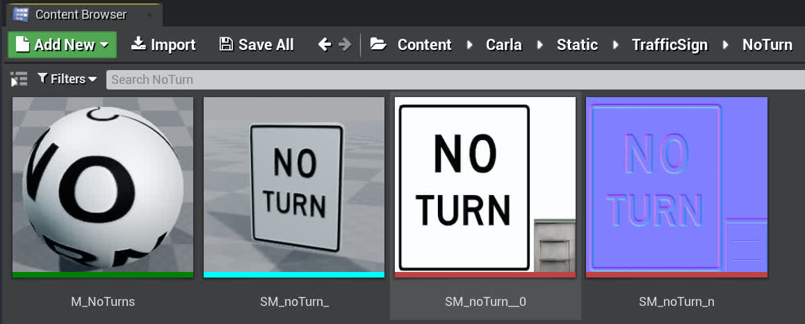
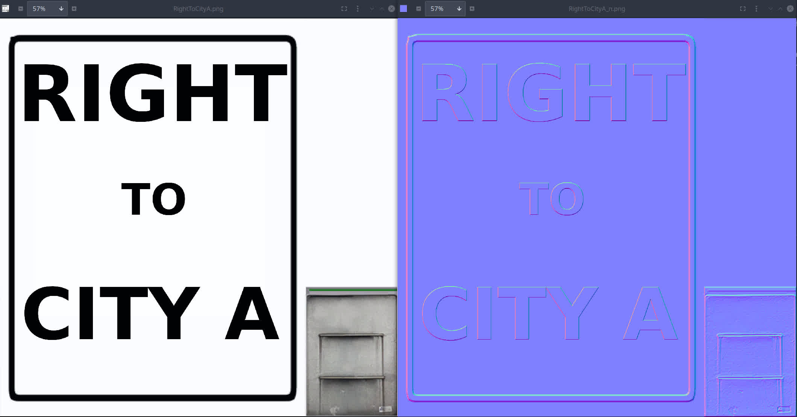
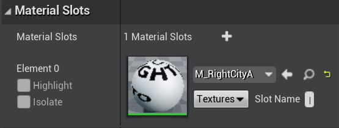
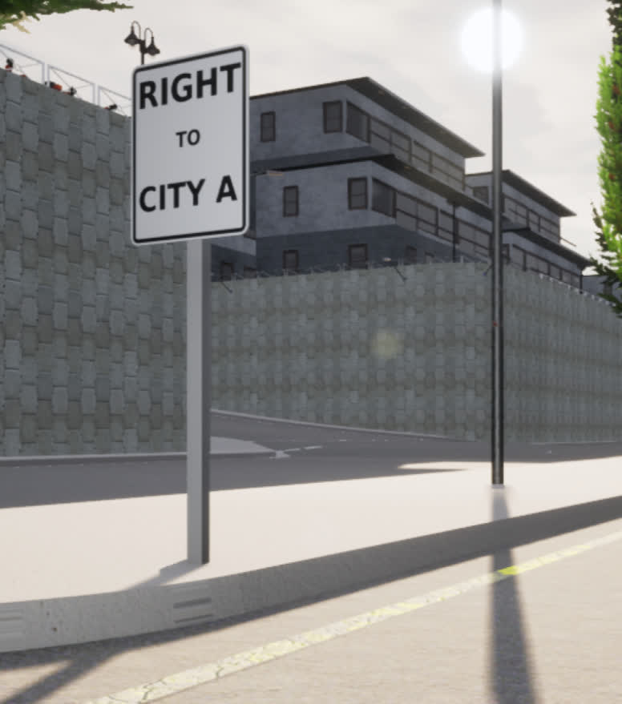
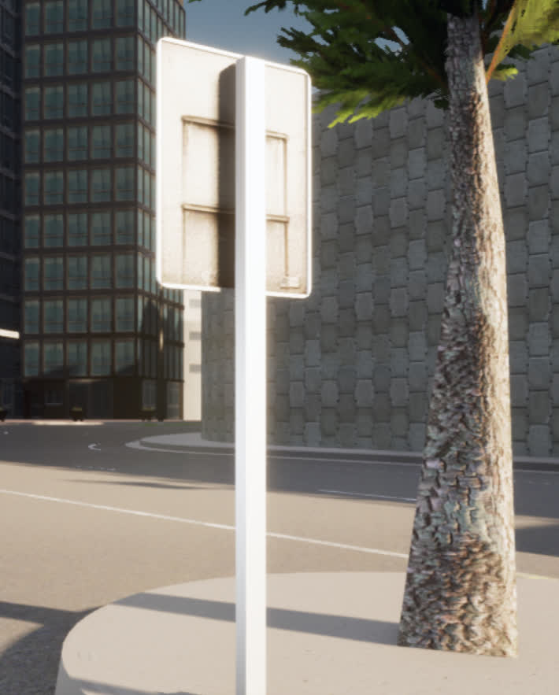

在 Carla 世界中添加定制的标志
简介
让实验参与者自然地知道要采取什么方向，而无需人工干预，这通常很有用。在 Carla 中这不是问题，因为所有驾驶员都是 AI 控制器，但对于人类来说，我们不能简单地获取表示路点和方向的文本文件。这就是环境中的方向标志可以发挥作用的地方。不幸的是，Carla 没有提供任何方向标志（因为这对他们来说不是问题），而且有足够多的步骤需要指南，所以请看这里。
本指南将向您展示如何创建自己的自定义标志并将其放置在任何 Carla 关卡中（从技术上讲，该指南可以在 Carla 中添加任何自定义道具，而不仅仅是标志）
-
步骤如下：
-
创建标志纹理（RGB/法线）
- 创建标志网格/材质
- 将材质应用到蓝图上
- 手动将蓝图放入世界中
- 可选： 使用蓝图库注册新标志
入门
可以在 Carla 中的 carla/Unreal/CarlaUE4/Content/Carla/Static/TrafficSign/ 目录中找到标志纹理。
例如，您应该看到如下所示的目录：

请注意，所有模型都有相应的目录（屏幕截图中有些被截断了）。这些是定义静态网格和纹理的地方，因此它们可以在这些标志形蓝图上使用。
-
对于本指南的其余部分，我们将重点介绍使用
NoTurn目录，该目录在内容浏览器中打开时如下所示：  -
从左到右依次为 Material Instance (
M_前缀), Static Mesh (SM_前缀), Texture RGB (__0后缀), 和 Texture Normals (_n后缀)
步骤 1：创建标志纹理
“禁止转弯(NO TURN)”标志是创建自定义标志的良好基础，尽管任何标志都可以作为起点。
现在，您可以截取图像的屏幕截图（或在“Details->File Path”中找到其源文件）以获取所需纹理的 .jpg，然后清除原始文本（“禁止转弯（NO TURN）”），使其成为空白画布。为了方便起见，我们在 Content/Static/DefaultSign.jpg 中提供了一个空白的“禁止转弯(NO TURN)”标志
{kind=link}
- 请注意，这些图片的右下角有一小块灰色区域。这实际上是标牌的背面，因此当它贴到模型上时，背面就有了金属表面。
- 这意味着我们希望在黑色边界内的区域内完成大部分标志内容的编辑
为此，拥有一个强大的图像编辑工具很有用，我们使用了 GIMP （免费和开源），本节的其余部分将其作为图像编辑工具。
在 Gimp 中，您应该能够在指定区域内添加任何您喜欢的静态组件（文本、图像等）。完成新标志图像后，将其导出为 .jpg。
接下来，您需要 GIMP 为您创建法线贴图。这可以通过依次选择Filters -> Generic -> Normal Map，并将默认法线生成应用于新创建的图像来轻松完成。导出此文件并使用后缀 _n.jpg 来表明它是法线贴图。
例如，如果我们希望标志上写着 "RIGHT TO CITY A(右转至 A 市)"，那么经过这个过程后，你应该会看到如下内容：

现在我们已经完成了图像处理和 GIMP 的使用。
现在回到 UE4，如果将 TrafficSign/NoTurn/ 目录复制到自定义目录（例如具有所有相同的 4 个元素（材质、静态网格、纹理 RGB 和纹理法线）的 DReyeVR_Signs/），那会最容易。
注意
有些用户报告无法直接在编辑器中复制/粘贴/复制。在这种情况下，只需在文件管理器中执行这些操作，然后重新打开编辑器即可。
cd $CARLA_ROOT/Unreal/CarlaUE4/Content/Carla/Static/TrafficSign/
cp -r NoTurn/ RightCityA/
# now RightCityA contains the following
RightCityA
- M_NoTurns.uasset
- SM_noTurn.uasset
- SM_noTurn_n.uasset
- SM_noTurn_.uasset
现在，在您的新自定义目录中，您可以通过单击顶部的Reimport按钮轻松地重新导入新的 .jpg 源文件。 找到用于 SM_noTurn 重新导入的 rgb .jpg 图像，并使用法线 .jpg 图像进行 SM_noTurn_n 重新导入。 |
 |
您可以在编辑器中随意重命名 SM_noTurn_* 资产文件（在内容浏览器中单击右键 -> 重命名）并保留命名方案。例如 SM_RightCityA 和 SM_RightCityA_n。
第 2 步：创建标志网格和材质
现在，您应该确保 Material (M_noTurns) 资源文件已使用新纹理更新。这可能会自动发生，但为了以防万一，您应该在编辑器中打开它，并分别选择新创建的 SM_RightCityA 和 SM_RightCityA_n 作为 SpeedSign_d 和 SpeedSign_n 的纹理参数值。
- 为此，请点击显示
SM_noTurn和SM_noTurn_n的下拉菜单框，然后搜索新的RightCityA变体 - 参数看起来应该是这样的

保存它并重命名（在编辑器中）：M_RightCityA 就足够了。
现在，最后打开 SM_noTurn_（静态网格）资产文件，并通过编辑材质槽中的材质元素确保它使用我们新创建的 M_RightCityA 材质：
- 与之前类似，在详细信息窗格中，单击下拉菜单，搜索“RightCity”，然后选择我们的新材料即可完成此操作 
保存并重命名（始终在编辑器中）：SM_RightCityA 生效了。
此时您应该有一个如下所示的 RightCityA 目录：

步骤 3：将新材料应用到蓝图上
一旦所有所需的材料/静态网格准备就绪，复制一个标志蓝图（来自父 TrafficSign 目录）并将其放置在 RightCityA
- 这应该可以在编辑器中完成。右键单击
BP_NoTurns-> 复制 -> 输入新名称 -> 拖动到RightCityA/ -> 选择移动
打开蓝图到视口(Viewport)选项卡并选择标志组件（不是杆）
在“细节(Details)”窗格中，您应该再次看到仍然是 SM_noTurn_ 的静态网格组件，将其替换为新的 SM_RightCityA_ 资源，重新编译并保存，然后就完成了。
现在它看起来应该是这样的：

第四步：将新标志放在世界上
有了新的标志蓝图，我们可以相当轻松地将其放入世界中。只需将其拖放到世界中，然后编辑其变换、旋转和缩放参数即可微调结果。
最终结果看起来应该相当不错，这是我们在 Town03 中的新标志的一个例子
| 标志牌正面 | 标志牌背面 |
|---|---|
|  |  |
请注意前部和后部看起来都很好，这是因为后部从纹理的右下方获得了金属区域。
步骤 5：（可选）向蓝图库注册
使用 Carla 的蓝图库注册我们的新标志使我们能够从 PythonAPI 生成标志，从而允许在运行时动态放置。
这比现有的 Carla 标志更深入一些，因为它们不是设计为动态生成的，而是在编译时静态地放入世界中。如果我们想在地图周围放置不同的标志以适应各种场景，而无需重新编译所有内容，这会变得令人沮丧。
根据 this issue ，在 Carla 0.9.11 上使用自定义道具的常规方式目前已损坏且不可靠。我们找到了一种 解决方法 并将其包含在问题中。
本质上，您需要编辑 carla/Unreal/CarlaUE4/Content/Carla/Config/Default.Package.json 文件以包含您的新标志道具，如下所示：
{
"name": "你的标志名",
"path": "/PATH/TO/YOUR/SM_SIGN.SM_SIGN",
"size": "Medium"
}
注意
"path"源正在寻找 UE4 静态网格对象，该对象将存储为 .uasset 文件。在 json 中仍将其表示为 SM_name.SM_name。
重要的是，如果您想在 Content/ 中包含自定义道具目录（而不是使用我们的 DReyeVR/DReyeVR_Signs/ 内容），您应该将其添加到 Config/DefaultGame.ini 中的烘焙资产列表中，例如：
+DirectoriesToAlwaysCook=(Path="/Game/DReyeVR/DReyeVR_Signs") # what we include
+DirectoriesToAlwaysCook=(Path="/Game/YOUR_PROP_DIR/") # any desired prop directory
make package) 过程中得到适当的烹饪。
一旦将此更改导入地图，您将能够按如下方式生成您的标志：
bp = blueprint_library.filter(("static.prop.YOUR_SIGN_NAME").lower()) # 过滤器是小写的！
assert len(bp) == 1 # 你应该只有一个这个名字的道具
transform = world.get_map().get_spawn_points()[0] # 或选择任何其他生成点
world.spawn_actor(bp[0], transform) # 应该会成功并且没有错误
注意
在构建我们（和 Carla）的标志时，将标志本身与其连接的杆子断开。因此，如果您想生成带有杆子的标志，则需要组合这些静态网格。- 编辑器支持此功能，方法是将两个参与者放入世界中，选择两者，然后使用 Window -> Developer -> MergeActors 按钮，如 本指南 所述。- 我们已经提供了 Content/DReyeVR_Signs/FullSign/ 目录的基准，我们将标志与杆子组合为单个静态网格。有了这个基准，假设您有一个兼容的材料（使用与我们相同的标志模板），您只需更新标志组件的材料而无需进一步修改。
自动放置标志
使用我们的 scenario-runner 分支 时，有逻辑可以根据路线特征（直行、左转、右转和目标）自动生成相应的方向标志。此逻辑可在 route_scenario 的导航标志代码 中找到。由于这会自动应用于所有路线，因此您可以通过注释 self._setup_nav_signs(self.route) 方法调用来手动禁用它。
如果您想要手动放置特定路线的标志，也可以使用文件方法（请参阅 此处 ），但我们发现自动放置标志在大多数情况下都很好用，而且更方便。因此建议使用自动方法，您无需执行任何操作即可启用它。